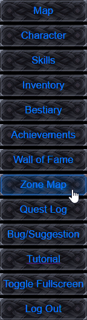

Minimap Screen
The minimap allows you to quickly see roughly what's around you, as well as different markers, On the minimap you may see the following markers:
- Blue Marker - Quest or shop NPCs
- Green Marker - Teleblisk location
- Red Marker - Portal to another map
- Gold Marker - Player current location